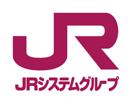
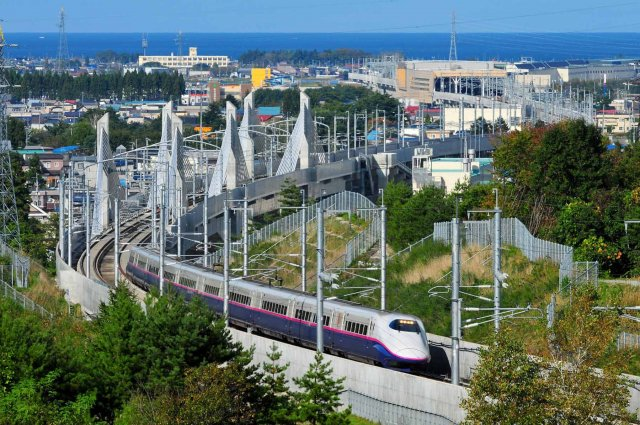
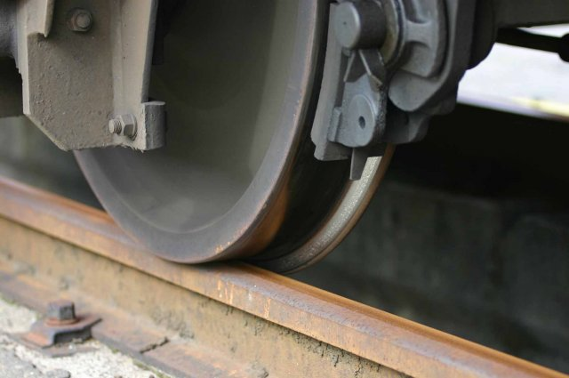

鉄道 運行関連

止まることは
日本の動きを止めること
だからこそ
きょうも私たちは走りつづけます
日本経済の発展と成長を支えつづける大動脈として、新幹線は日々の暮らしになくてはならない存在です。その新幹線に求められる安全性と正確性などのハイレベルなサービスを維持しつづけるためには、車両や設備はもちろん運行までも含めたトータルなシステムの開発と運用が欠かせません。
私たちアトラスシーが携わっているシステムが、東北・上越・北陸・山形・秋田といった東日本を縦横に走る各新幹線を支える『新幹線総合システム（COSMOS・コスモス）』です。
新幹線開業時から脈々と受け継がれてきたノウハウを活かし、最新の技術を随時取り入れながら、車両管理系から輸送計画系までのシステム開発と保守を担っています。
さらに国内各社の新幹線や在来線でも、列車ダイヤに関連するシステムや車両の保全に関連するシステムで鉄道に精通したトータルなソリューション力を発揮しているのが私たちアトラスシー。
輸送計画システム
新幹線のダイヤを作成し車両や臨時列車計画の運用を担います

新幹線は高速かつ高密度での運転を行いますが、頻繁に分割・併合が行われ、その車両も多種多様にわたるのが特徴です。輸送計画システムはこのニーズに応えて各新幹線のダイヤを作成し、それに対応した車両の割当や臨時列車の増発計画の作成を支援しています。
車両管理システム
新幹線車両の検査・修繕に関する管理を担います

新幹線の車両点検の計画と実績、車両の部品の装備状況や故障・修繕の履歴を管理し、新幹線の安全運行を支えています。